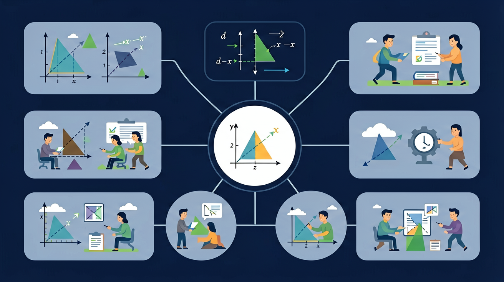

🎯 能说出平均数、中位数、众数的计算步骤
🎯 能根据数据分布特征选择合适的集中量数
🎯 能分析极端值对平均数的影响程度
❓ 为什么平均数有时候会骗人？
❓ 班级平均分提高了，就说明每个人都进步了吗？
❓ 中位数和平均数到底该用哪个更靠谱？
学完这一课，这些问题你都能自信地回答。
计算3,5,7,9,11的平均数
哪组数据适合用众数？
平均数反映数据的平均水平，但容易受极端值影响；中位数是排序后处于中间位置的数，抗极端值能力强；众数是出现次数最多的数据。方差衡量数据的波动大小，方差越小越稳定。
求中位数一定先排序，偶数个数据取中间两数的平均值。比较两组数据的稳定性用方差，比较整体水平用平均数。
常见误区：常见误区是求中位数时忘记排序，或认为平均数一定最能代表数据的一般水平。
当一组数据中存在极端值时，最能反映一般水平的统计量通常是？
数据 2、3、3、8 的平均数与中位数分别是？
And：学生见过表格和图表
But：不知道如何从中提取有用信息
Therefore：学会用数据描述现象
数据就像藏在沙子里的金子，需要整理才能发现价值。比如全班40人，数学成绩的原始数据是杂乱无章的：78,92,65...我们可以用频数分布表整理，比如80-90分有15人，一下子就看出多数人成绩中等偏上。记住整理数据的三个步骤：收集→分类→呈现。
🌍 就像整理衣柜，把T恤、裤子分开挂，立刻知道哪种衣服最多。超市货架也是按品类摆放，方便统计哪些商品最畅销。
某班学生身高(cm)记录如下，哪个区间人数最多？[150,152,155,155,158,160,160,160,163]
And：知道条形图折线图
But：不清楚什么时候用哪种
Therefore：掌握图表选用原则
不同类型的图表就像不同的工具：条形图适合比较数量（如各品牌手机销量对比），折线图显示趋势（如小明连续5次月考成绩变化），扇形图表现占比（如班级近视率62%）。关键看你想突出什么：要比较选条形，看变化用折线，说比例画扇形。
🌍 就像天气App用折线图预报温度变化，用柱状图显示降雨概率，选错图表就像用螺丝刀切西瓜。
要分析近5年学校新生人数变化，最好用：
And：会算平均数
But：容易忽视极端值影响
Therefore：理解数据代表值局限性
平均数不一定靠谱！比如小餐馆5名员工月薪：3000,3200,3500,3800,15000元，平均5700元，但其实有4人低于4000元。这时要用中位数（3500元）才真实。记住：数据差距大时，中位数比平均数更能代表普通水平。就像姚明进班级后，平均身高就没参考价值了。
🌍 就像游戏里队友等级50,50,50,50,100，平均等级60，但大部分人才50级，这个平均数会误导判断。
某组数据：10,20,30,40,100，哪个代表值最不可靠？
And：能计算基本统计量
But：不会分析数据背后规律
Therefore：培养数据推理意识
数据分析就像侦探破案。比如冰激凌店发现：气温30℃时销量120支，35℃时150支，似乎温度越高销量越好。但要看完整数据：某天38℃时反而只卖80支，因为那天是工作日。所以结论应该是：休息日+高温时销量最高。注意相关≠因果！
🌍 就像发现下雨天外卖订单多，其实是人们不愿出门，而不是下雨直接导致想吃外卖。
图书馆数据：开空调时读者停留时间更长，说明：
开放任务：用三步写出你如何向同学讲清「数据的分析」。
通过身高数据拆解三种集中量数的计算过程
用班级成绩单说明中位数抗极端值干扰的特性
对比气温与垃圾量两组数据的离散程度差异
用折线图呈现数据波动与集中趋势的关系
分析超市销售数据选择最佳补货时机
关于频数分布直方图，正确的是
分析6月每日气温与厨余垃圾量的30组数据
💡 多次投放小球，观察数据分布与集中趋势（平均数、众数）的变化。
外链：https://phet.colorado.edu/sims/html/plinko-probability/latest/plinko-probability_zh_CN.html
先独立作答，再点选项查看对错与错因。
当社区需要向居民展示哪类垃圾产生量最稳定时，应优先选用哪个统计量？
右偏态分布的垃圾重量数据中，平均数、中位数、众数的大小关系是
要比较两个垃圾分类点的可回收物收集量差异，最适合的图表是
某周7天的厨余垃圾数据（kg）：12,15,18,12,20,12,16。众数是____，中位数是____。
答案：12,15
众数出现3次；排序后第4个数是中位数
已知5个垃圾站的可回收物收集量方差为4.8，若每个数据加3kg，新方差是____。
答案：4.8
方差不受数据平移影响
✅ 必须先用茎叶图或列表排序数据
💡 未掌握中位数的数学定义
✅ 温度等连续数据应先分组再找频数最高组
💡 混淆离散型与连续型数据特征
口诀：平均数敏感易被拉，中位数稳坐中间塔，众数只看谁最大
类比：就像排队买奶茶，平均数可能被插队者影响，中位数永远找第5个人
某组数据加入极大值后，一定增大的是？
分析超市各时段客流量的最佳指标是？
若某班数学成绩右偏分布，应优先参考？